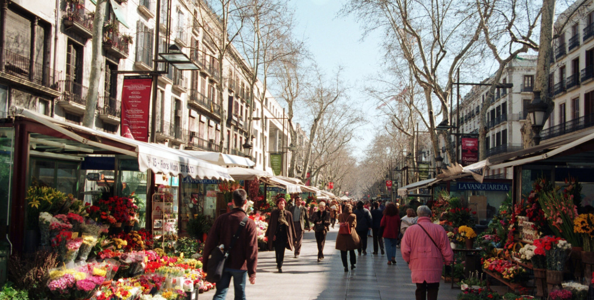

LAS RAMBLAS ♥

☰
Las Ramblas es una conocida y transitada calle de Barcelona, una de las vías con más vida de la ciudad.
Durante muchas décadas ha sido el punto de encuentro de los habitantes de la capital catalana.
La Rambla es una larga avenida barcelonesa, de 1,2 km de longitud exactamente, que recorre el trayecto desde
La Plaza de Catalunya hasta el Mirador de Colón frente al antiguo puerto de la ciudad.
Sus orígenes se remontan a al siglo XVIII, cuando en 1766 se construyó un amplio paseo que seguía el recorrido de la antigua
muralla medieval de la ciudad, derribada seis años antes. Pronto la calle se convertiría en uno de los centros neurálgicos de Barcelona
donde se daban cita todo tipo de personas, ya que Las Ramblas era una avenida ancha nada comparable con las estrechas calles
de los barrios antiguos de la ciudad. Dada la importancia que adquirió esta calle se fueron añadiendo construcciones como museos,
el Gran teatro del Liceu, la famosa fuente de las Canaletas, donde los jugadores del equipo de la ciudad llevan a cabo sus celebraciones,
el Palau de la Virreina, o el Mercado de la Boqueria. Pronto se comenzaron a plantar árboles que diesen sombra
y que hiciesen más agradables los paseos de los viandantes.
Durante todo el siglo XIX comenzaron a asentarse puestos de venta de flores a lo largo de la avenida, que aún hoy
pueden verse además de multitud de tiendas, cafeterías, restaurantes, quioscos y puestos de venta de souvenirs.
#Barcelonacontigo♥